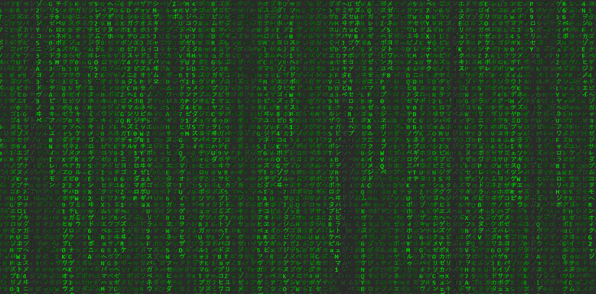

Como Criei o Efeito Matrix do Meu Portfólio
Publicado em 29 de Junho de 2025 • Leitura de 5 min
Neste artigo, vou te guiar passo a passo por todo o processo de criação dessa animação, usando apenas HTML, CSS e JavaScript puro. Vamos explorar os conceitos básicos do HTML Canvas para dar vida a um fundo dinâmico e impactante.
Passo 1: Organização de Arquivos e Pastas
Primeiro, crie uma pasta onde de forma organizada você possa criar e importar arquivos, feito isso crie três arquivos com o mesmo nome (Pode mudar se preferir, mas aconselho que mantenha o mesmo nome)
index.html, style.css e script.js
Passo 2: A Estrutura HTML
No seu arquivo index.html crie a estrutura básica de um arquivo HTML, agora procure por uma seção chamada <body></body>
e dentro dela, copie e cole esse script:
<canvas id="matrix-canvas"></canvas>
Depois de adicionar o canvas, não se esqueça de linkar seus arquivos CSS e JavaScript no seu HTML. Adicione <link rel="stylesheet" href="style.css"> dentro do <head> e <script src="script.js" defer></script> antes de fechar o </body>
Passo 3: A Estrutura do CSS
Para que o efeito funcione corretamente, precisamos garantir que o canvas se comporte como um fundo de tela, no seu arquivo style.css copie e cole esse script:
#matrix-canvas {
position: absolute;
top: 0;
left: 0;
width: 100%;
height: 100%;
z-index: 0; /* Garante que o canvas fique atrás do conteúdo */
}
Passo 4: A Lógica com JavaScript
Indo para a cereja do bolo que seria arquivo .js, é nele que a magia acontece, nele vamos jogar todas as funções para que o seu navegador consiga criar o efeito de letras caindo.
No código abaixo, usei as cores clássicas verde e preto. No meu portfólio, eu apenas mudei os valores de fillStyle para combinar com a identidade visual roxa do site.
Com o seu arquivo script.js aberto, copie e cole essa estrutura de funções:
function iniciarEfeitoMatrix() {
const canvas = document.getElementById('matrix-canvas');
if (!canvas) return;
const ctx = canvas.getContext('2d');
canvas.width = window.innerWidth;
canvas.height = window.innerHeight;
const alphabet = 'アァカサタナハマヤャラワガザダバパイィキシチニヒミリヰギジヂビピウゥクスツヌフムユュルグズブプエェケセテネヘメレヱゲゼデベペオォコソトノホモヨョロヲゴゾドボポヴッンABCDEFGHIJKLMNOPQRSTUVWXYZ0123456789';
const fontSize = 16;
const columns = Math.floor(canvas.width / fontSize);
const rainDrops = Array.from({ length: columns }).fill(1);
const desenhar = () => {
ctx.fillStyle = 'rgba(5, 29, 2, 0.01)';
ctx.fillRect(0, 0, canvas.width, canvas.height);
ctx.fillStyle = '#00FF00';
ctx.font = fontSize + 'px monospace';
for (let i = 0; i < rainDrops.length; i++) {
const text = alphabet.charAt(Math.floor(Math.random() * alphabet.length));
ctx.fillText(text, i * fontSize, rainDrops[i] * fontSize);
if (rainDrops[i] * fontSize > canvas.height && Math.random() > 0.975) {
rainDrops[i] = 0;
}
rainDrops[i]++;
}
};
setInterval(desenhar, 33);
window.addEventListener('resize', () => {
canvas.width = window.innerWidth;
canvas.height = window.innerHeight;
// Recalcula o número de colunas, mas não precisa resetar as gotas
});
}
document.addEventListener('DOMContentLoaded', () => {
iniciarEfeitoMatrix();
});
Resultado

Bônus: Customizando a Animação
Vou ensinar a trocar os caracteres que caem e essa troca na realidade é super simples, no seu arquivo localiza a seguinte função: const alphabet.
Ela que é responsável por mandar a ordem dos caracteres, nesse campo você pode colocar qualquer caracter desde que o navegador suporte e até mesmo alguns tipos de emojis, se quiser testar, vou deixar um exemplo de como pode fazer.
Ex: ABCDEFGHIJKLMNOPQRSTUVWXYZ123456789
Aviso: Quando for substituir qualquer valor dentro do campo const alphabet = '', não se esqueça de manter as aspas simples, senão o código não irá funcionar.
E pronto! Com uma estrutura HTML simples, um pouco de CSS e a magia do JavaScript Canvas, criamos uma animação de fundo icônica e totalmente funcional.